はじめてみよう（Android）
Android端末を使ってDeviceConnectを体験します。これは実機だけでできます。
必要なもの
- Android端末
- 母艦（デスクトップ）
- ファイルマネージャアプリ（ファイル マネージャーなど）
デモのダウンロード
まずデモファイルをダウンロード、解凍します。
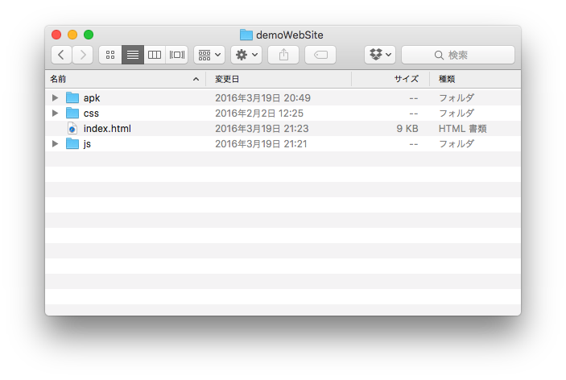
そして、この内容をAndroidのストレージにコピーします。Mac OSXの場合はAndroid File Transferを使ってください。
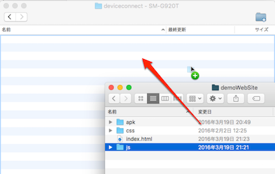
コピーが終わるとこのようになります。
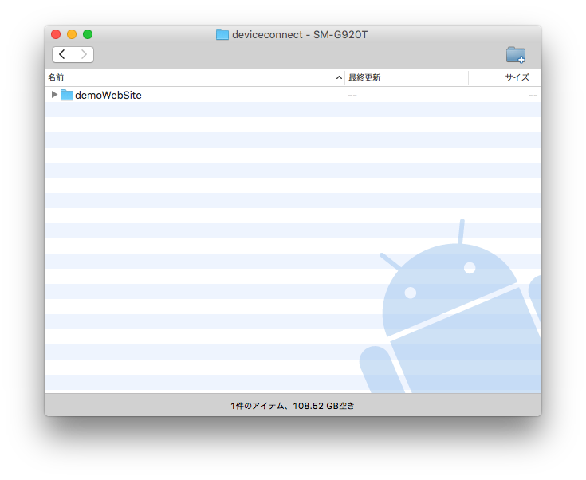
Chromeブラウザで開く&アプリのインストール
次にAndroidのGoogle Chromeを使って、先ほどコピーしたindex.htmlを開きます。この時、ファイルマネージャを使うと便利です。
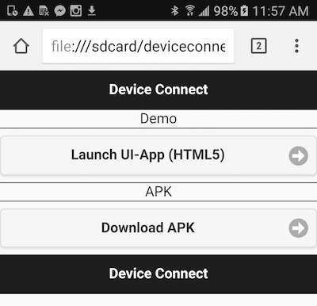
まずDownload APKをクリックします。そして一覧が表示されるので、DeviceConnectManagerとAndroid Hostをインストールします。
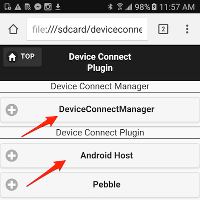
デフォルトの設定ではインストールできないので、設定アプリのセキュリティの中にある提供元不明のアプリのインストールを許可してください。
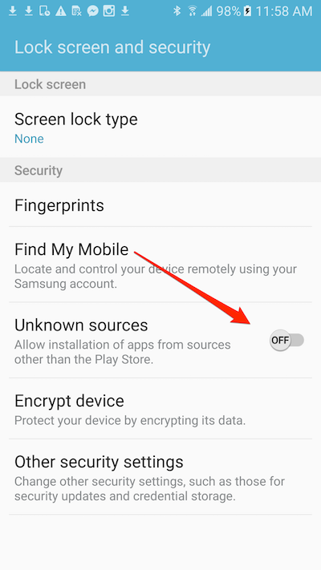
2つのアプリをインストールします。
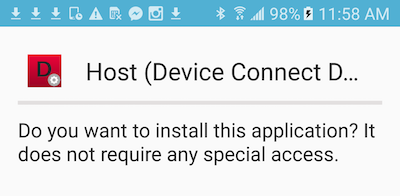
UIアプリを起動
先ほどのHTMLの画面に戻って、Launch UI-App（HTML5）を選択します。なお、この際以下のようなエラーが出ることがあります。
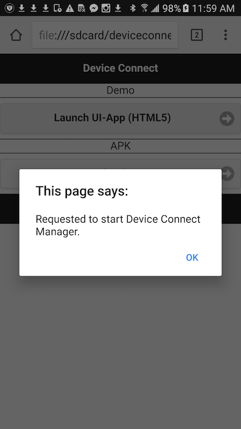
この場合はDeviceConnectManagerアプリを開いて、DeviceConnect Managerをオンにしてください。

以下の画面がLaunch UI-Appを開いた画面です。
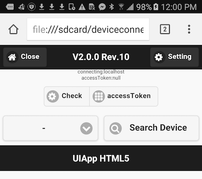
まず最初にaccessTokenボタンをタップします。

そうするとアクセス許可を求める承認ダイアログが出ますので、ACCEPTをタップします。

承諾して最初の画面に戻ってくると、accessTokenが取得できているのが分かるはずです。
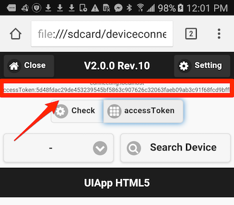
使ってみる
では実際に機能を試してみます。左下にあるドロップダウンをタップします。
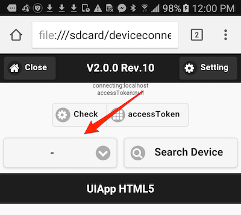
そうすると使える機能が一覧で表示されます。
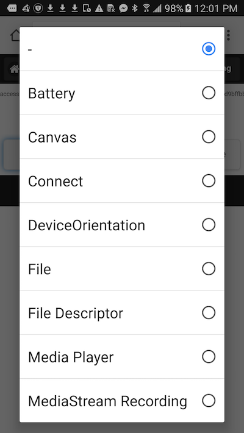
今回は例えばVibration（バイブレーション）を選択しました。
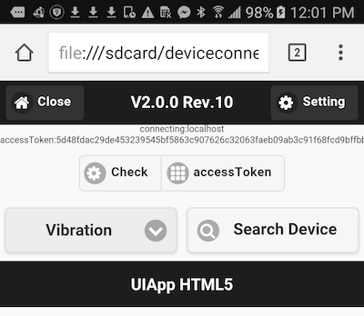
さらにSearch Deviceをタップすると、DeviceConnectが使えるデバイス（今回は実機）がリストアップされます。これはプラグインによって他のウェアラブルデバイスなどを対応させられます。
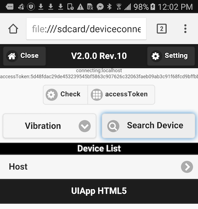
Hostというのをタップすると、Profile Listが表示されますので、この中からVibrationを選択します。
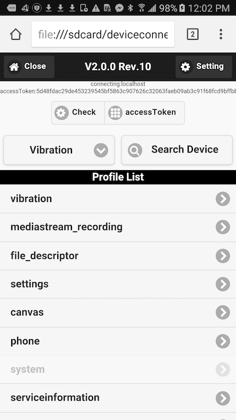
この画面でVibrateをタップすると、実際に実機がバイブレーションします。ローカルのHTMLファイルからDeviceConnect WebAPIを通じて実機を操作できるのが分かるでしょう。
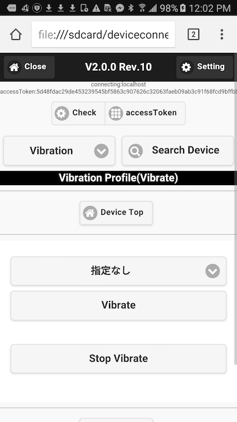
さらにバイブレーションのタイミングを変更することもできます。
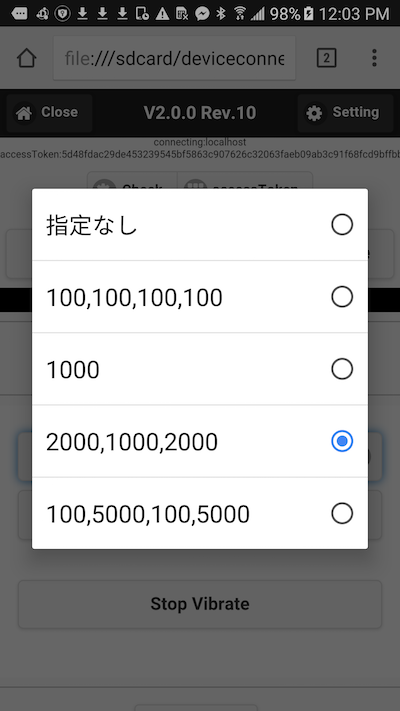
外部から操作してみる
DeviceConnectはWebAPIなので、外部からコールすることもできます。ただしセキュリティの問題もあり、デフォルトでは弾いています。DeviceConnect Managerアプリを立ち上げて、Allow External IPをチェックします。

ではデスクトップのブラウザ（ChromeやFirefoxなど）で同じようにローカルのindex.htmlを開きます。この時、index.htmlの後に ?ip=(DeviceConnectが立ち上がっているAndroidのIPアドレス) を指定します。例えば file:///path/to/demoWebSite/index.html?ip=192.168.0.20 のようになります。表示したらAndroidと同じようにaccessTokenを取得します。
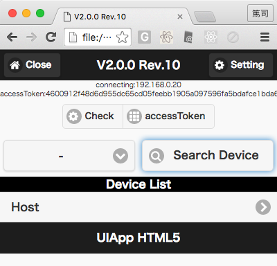
デスクトップからバイブレーションを実行してみます。
他にも例えばバッテリーの情報が取れたり、
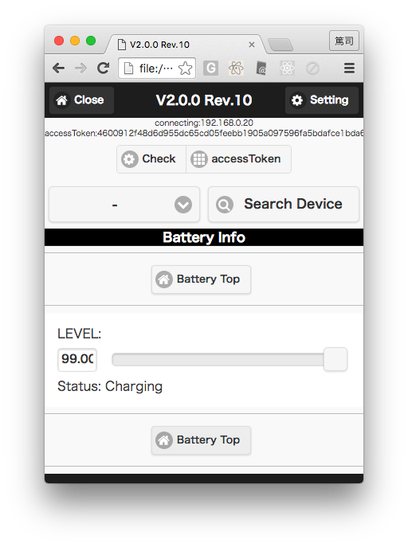
バッテリーが充電状態かどうかの判定もできます。
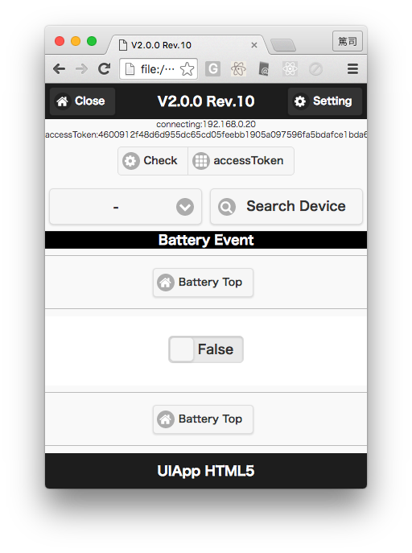
DeviceConnectにはたくさんのプラグインがリリースされており、それを使うことでウェアラブルデバイスがJavaScriptから操作できるようになります。ぜひ試してみてください！